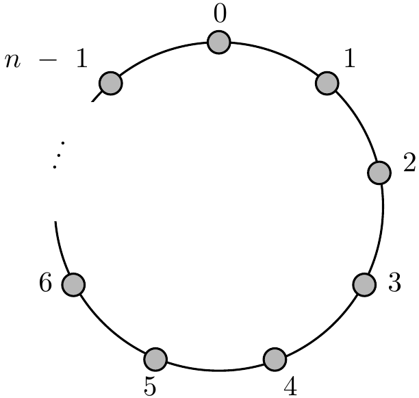

5 Countability
We would like to talk about sizes of infinite sets e.g. \(\mathbb{N}\) “looks smaller than” \(\mathbb{Z}\), and a lot smaller than \(\mathbb{Q}\), which in turn looks smaller that \(\mathbb{R}\).
Definition 5.1 (Countable sets) We say a set \(X\) is countable if \(X\) is finite or there is a bijection \(X \to \mathbb{N}\). That is \(X\) is countable iff we can list the elements of \(X\) as \(x_1, x_2, x_3, \dots\) (will terminate if finite set).
Example 5.1
Any finite set is countable.
\(\mathbb{N}\) is countable.
\(\mathbb{Z}\) is countable, as we may \(\mathbb{Z}\) as \(0, 1, -1, 2, -2, 3 \dots\) i.e. \(x_n = \begin{cases} \frac{n}{2} & \text{if $n$ is even} \\ -\frac{n - 1}{2} & \text{if $n$ is odd}. \end{cases}\)
Lemma 5.1 Any subset of \(\mathbb{N}\) is countable.
Proof. If \(S \subseteq N\) is non-empty, by WOP (well ordering principle) there is a least element \(s_1 \in S\). If \(S \setminus \{s_1\} \neq \emptyset\), by WOP there is a least element \(s_2 \in S_1 \setminus \{s_1, s_2\} \neq \emptyset \dots\) If at some point this process stops, then \(S = \{s_1, s_2, \dots, s_m\}\) is finite. If it goes on forever, the map \(g : \mathbb{N} \to S\) given by \(g(n) = s_n\) is well defined (for every \(n\), there is a unique \(s_n\)) and is injective. It is also surjective because if \(k \in S\), then \(k \in \mathbb{N}\), and there are \(< k\) elements of \(S\) less than \(k\), so \(k = s_n\) for some \(n \leq k\).
Warning In \(\mathbb{R}\), let \(S = \left\{\frac{1}{2}, \frac{2}{3}, \frac{3}{4}, \dots\right\} \cup \{1\}\), then \(S\) is countable as we can list it as \(1, \frac{1}{2}, \frac{3}{4}, \dots\) but if we have tried to list the elements in increasing order (as in the proof of Lemma 5.1 then \(1\) would not be on the list).
Theorem 5.1 The following statements are equivalent:
\(X\) is countable;
There is an injection \(X \to \mathbb{N}\);
\(X = \emptyset\) or there is a surjection \(\mathbb{N} \to X\).
Proof. Plainly (i) \(\implies\) (ii) for if \(X\) is finite, it obviously injects into \(\mathbb{N}\), and if \(X\) bijects with \(\mathbb{N}\), then it certainly injects into \(\mathbb{N}\).
Conversely, if there is an injection \(f : X \to \mathbb{N}\), then \(f\) is a bijection between \(X\) and \(S = f(X)\).
If \(S\) is finite, then so is \(X\).
If \(S\) is infinite, then by Lemma 5.1, there is a bijection \(g : S \to \mathbb{N}\), and thus \(X \overset{f}{\to} S = f(X) \overset{g}{\to} \mathbb{N}\) is a bijection.
So (ii) \(\implies\) (i).
Plainly (i) \(\implies\) (iii), if \(X \neq \emptyset\) and there is a surjection \(f : \mathbb{N} \to X\), define \(g : X \to \mathbb{N}\) by \(g(a) = \min f^{-1}(\{a\})\), which exists by WOP.
\(g\) is injective, so by (ii), \(X\) is countable, i.e. (iii) \(\implies\) (i).
Corollary 5.1 Any subset of a countable set is countable.
Proof. If \(Y \subseteq X\) and \(X\) is countable, then take the injection \(X \to \mathbb{N}\) restricted to \(Y\).
We may thus view “countable” as meaning as saying a set is “at most as big as \(\mathbb{N}\)”.
Theorem 5.2 \(\mathbb{N} \times \mathbb{N}\) is countable.
Proof (1). Define \(a_1 = (1, 1)\) and \(a_n\) inductively by, writing \(a_{n-1} = (p, q)\), \[\begin{align*} a_n = \begin{cases} (p - 1, q + 1) & p \neq 1 \\ (p + q, 1) & \text{otherwise.} \end{cases} \end{align*}\] This list includes every point \((x, y) \in \mathbb{N} \times \mathbb{N}\) by induction on \(x + y\).

Proof (2). Define \[\begin{align*} f : \mathbb{N} \times \mathbb{N} &\to \mathbb{N} \\ (x, y) &\mapsto 2^x 3^y. \end{align*}\] Then \(f\) is injective by 2.5
Corollary 5.2 \(\mathbb{Z} \times \mathbb{Z}\) is countable
Proof. Since \(\mathbb{Z}\) is countable, there is an injection \(\mathbb{Z} \to \mathbb{N}\), so because \(\mathbb{N} \to \mathbb{N}\) is countable, we have an injection \(\mathbb{Z} \times \mathbb{Z} \to \mathbb{N} \times \mathbb{N} \to \mathbb{N}\).
By induction \(\mathbb{Z}^k\) is countable for any \(k \in \mathbb{N}\).
Theorem 5.3 A countable union of countable sets is countable (a countable union is a union of sets that are indexed by a countable set)
Proof (1). We may assume that our countable sets are indexed by \(\mathbb{N}\), so given countable sets \(A_1, A_2 A_3, \dots\) we wish to show \(\bigcup_{n \in \mathbb{N}} A_n\) is countable.
For each \(i \in \mathbb{N}\), since \(A_i\) is countable, we may list its elements as \(a_1^{(i)}, a_2^{(i)}, a_3^{(i)}\) (might terminate).
Define \[\begin{align*}
f : \bigcup_{n \in \mathbb{N}} A_n &\to \mathbb{N} \\
x &\mapsto 2^i 3^j
\end{align*}\] where \(x = a_j^{(i)}\) for the least \(i\) s.t. \(x \in A_i\) (as \(x\) could be in more than of the \(A_i\)’s).
This is an injection.
Proof (2). Let \(I\) be a countable index set, and for each \(i \in I\), \(A_i\) is a countable set.
Since \(I\) is countable, there is an injection \(f : I \to \mathbb{N}\) and for each \(i \in I\), since \(A\) is countable, there is an injection \(g_i :A_i \to \mathbb{N}\).
We construct an injection \(h : A = \bigcup_{i \in I} A_i \to \mathbb{N} \times \mathbb{N}\) as follows for each \(x \in A\), pick \(m_x = \min \{j \in \mathbb{N},\ x \in A_i,\ f(i) = j\}\), which exists by WOP.
Let \(i_x\) be such that \(f(i_x) = m_x\) (\(i_x\) is unique as \(f\) is injective).
Set \(h(x) = (m_x, g_{i_x}(x))\).
Then \(h\) is an injection.
Example 5.2 \(\mathbb{Q} = \bigcup_{n \in \mathbb{N}} \frac{1}{n} \mathbb{Z} = \bigcup_{n \in \mathbb{N}} \left\{ \frac{m}{n} : m \in \mathbb{Z} \right\}\), so \(\mathbb{Q}\) is a countable union of countable sets, hence countable.
Theorem 5.4 The set \(\mathbb{A}\) of algebraic numbers is countable.
Proof. It suffices to show that the set of all polynomials with integer coefficients is countable as then \(\mathbb{A}\) is a countable union of finite sets, so by Theorem 5.3, is countable. In fact, it suffices to show that for each \(d \in \mathbb{N}\), the set \(P_d\) of all integer polynomials of degree \(d\) is countable, again by Theorem 5.3. But the map \(P_d \to \mathbb{Z}^{d + 1}\), \(p(x) = a_d x^d + a_{d-1}x^{d-1} + \dots + a_1 x + a_0 \mapsto (a_d, a_{d-1}, \dots, a_1, a_0)\) is an injection, so since \(\mathbb{Z}^{d + 1}\) is countable, \(P_d\) is countable.
A set is uncountable if it is not countable. Do uncountable sets exist?
Theorem 5.5 \(\mathbb{R}\) is uncountable.
Proof. If \(\mathbb{R}\) were countable, we would be able to list all the reals as \(r_1, r_2, r_3, \dots\) Write each \(r_n\) in decimal form in some way. \[\begin{align*} r_1 &= n_1.d_{11} d_{12} d_{13} d_{14} \dots \\ r_2 &= n_2.d_{21} d_{22} d_{23} d_{24} \dots \\ r_3 &= n_3.d_{31} d_{32} d_{33} d_{34} \dots \\ &\;\;\vdots \end{align*}\] Define \(r = 0.d_1 d_2 d_3 \dots\) by \(d_n = \begin{cases} 1 & \text{if } d_{nn} \neq 1 \\ 2 & \text{if } d_{nn} = 1 \end{cases}.\) This \(r\) has only one decimal expansion and is not on the list (because \(\forall \; n \in \mathbb{N}, r \neq r_n\)) which is a contradiction.
This is known as a “diagonal argument”, due to Cantor (1870s). Note that it in fact shows that \((0, 1)\) is uncountable.
Corollary 5.3 There are uncountably many transcendental numbers.
Proof. If \(\mathbb{R} \setminus \mathbb{A}\) were countable, then since \(\mathbb{A}\) is countable, \(\mathbb{R} = \mathbb{R} \setminus \mathbb{A} \cup \mathbb{A}\) would be countable. ⨳
Theorem 5.6 \(\mathcal{P} (\mathbb{N})\), 4.1, is uncountable.
Proof (1). If \(\mathcal{P}(\mathbb{N})\) were countable, we could list the subsets of \(\mathbb{N}\) as \(S_1, S_2, S_3, \dots\)
Let \(S = \{ n \in \mathbb{N} : n \in S_n \}\) (it includes \(1\) if \(1 \notin S_1\) …).
Then \(S\) is not on our list since \(\forall \; n \in \mathbb{N}\), \(S \neq S_n\) (as \(S\) and \(S_n\) differ in their membership of the element \(n\)). ⨳
Hence \(\mathcal{P}(\mathbb{N})\) is uncountable.
Note that this is again a “diagonal argument”.
Proof (2). Note that there is an injection from \((0, 1)\) into \(\mathcal{P}(\mathbb{N})\) : write \(x \in (0, 1)\) in binary \(0.x_1 x_2 x_3 \dots\) with each \(x_i \in \{0, 1\}\) (not ending in \(0.111 \dots\)) and set \(f(x) = \{n : x_n = 1\}\). E.g. \(0.11101000 \dots \mapsto \{1, 2, 3, 5\}\). This is an injection.
In fact, Proof 1 of Theorem 5.6 shows the following.
Theorem 5.7 For any set \(X\), there is no bijection between \(X\) and \(\mathcal{P}(X)\).
Proof. Given any function \(f : X \to \mathcal{P}(X)\), we shall show that \(f\) is not a surjection. Indeed, let \(S = \{x \in X : x \notin f(x)\}\) (\(f(x)\) is a subset). Then \(S\) does not belong to the image of \(f\), since \(\forall \; x \in X, S\) and \(f(x)\) differ in the element \(x\), and thus \(S \neq f(x)\).
Remark.
This is reminiscent of Russel’s paradox.
In fact, Theorem 5.7 gives another proof that there is no universal set. Suppose we had such a universal set \(V\), then \(\mathcal{P}(V) \subseteq V\), in which case there would be a surjection from \(V\) to \(\mathcal{P}(V)\) (as there is always a surjection from a set to any subset of it).
Example 5.3 Let \(\{A_i : i \in I\}\) be a family of open intervals of \(\mathbb{R}\) which are pairwise disjoint.
Must the family be countable?
 Warning: There is no “next” interval after \((a, b)\).
The family \(\{A_i : i \in I\}\) is nevertheless countable.
Warning: There is no “next” interval after \((a, b)\).
The family \(\{A_i : i \in I\}\) is nevertheless countable.
Proof (1). Each interval \(A_i\) contains a rational, and \(\mathbb{Q}\) is countable, so since the intervals are disjoint, we have an injection from \(I\) into \(\mathbb{Q}\). Hence the family \(\{A_i : i \in I\}\) is countable.
Proof (2). The set \(\{i \in I : A_i \text{ has length }\geq 1 \}\) is countable as it injects into \(\mathbb{Z}\).
 Similarly, the set \(\{i \in I : A_i \text{ has length } \geq \frac{1}{2} \}\) is countable as it injects into \(\frac{1}{2} \mathbb{Z}\).
Similarly, the set \(\{i \in I : A_i \text{ has length } \geq \frac{1}{2} \}\) is countable as it injects into \(\frac{1}{2} \mathbb{Z}\).
More generally, for each \(n \in \mathbb{N}\), \(\{i \in I : A_i \text{ has length } \geq \frac{1}{n} \}\) is countable.
Now \(\{A_i : i \in I\}\) is countable as it is a countable union of countable sets.
Summary
To show that \(X\) is uncountable
Run a diagonal argument on \(X\);
Inject your favourite uncountable set into \(X\).
To show that \(X\) is countable
List it (may be fiddly);
Inject it into \(\mathbb{N}\);
Use “countable union of countable sets is countable”, Theorem 5.3;
If “in/ near” \(\mathbb{R}\), consider \(\mathbb{Q}\).
Intuitively, we think of “A injects B” as saying that “A and B” are of the same size, “A injects into B” as saying that “A is at most as big as B”, and “A surjects onto B” as saying that “A is at least as big as B” (for \(B \neq \emptyset\)).
For these interpretations to make sense, we need that if “A is at most as big as B”, then “B is at least as big as A”, and conversely.
Lemma 5.2 Given non-empty sets \(A\) and \(B\), \(\exists\) injection \(f : A \to B \iff \exists\) surjection \(g : B \to A\).
Proof. Suppose \(f : A \to B\) is injective.
Fix \(a_0 \in A\).
\[\begin{align*}
\text{Define } g : B &\to A \\
b &\mapsto \begin{cases}
\text{unique $a \in A$ s.t. $f(a) = b$ if it exists} \\
a_0 \text{ otherwise}.
\end{cases}
\end{align*}\]
Then \(g\) is surjective (i.e. take the inverse of \(f\) from \(f(A) \to A\) and set any \(b \in B \setminus f(A)\) to \(a_0\)).
Conversely, suppose \(g : B \to A\) is surjective.
\[\begin{align*}
\text{Let } f : A &\to B \\
a &\mapsto \text{ some $b \in B$ s.t. $g(b) = a$}.
\end{align*}\] Then \(f\) is injective (the subsets in \(A\) that map to \(b\) are disjoint).
Theorem 5.8 (Schröder-Bernstein Theorem) If \(f : A \to B\) and \(g : B \to A\) are injections, then \(\exists\) bijection \(h : A \to B\).
Proof. For \(a \in A\), write \(g^{-1}(a)\) for the \(b \in B\) (if it exists) s.t. \(g(b) = a\).
Similarly, for \(b \in A\), write \(f^{-1}(b)\) for the \(a \in A\) (if it exists) s.t. \(f(a) = b\).
We call \(g^{-1}(a), f^{-1}(g^{-1}(a)), g^{-1}(f^{-1}(g^{-1}(a))), \dots\) the ancestor sequence of \(a \in A\) (it may terminate).
Similarly, we can define the ancestor sequence of \(b \in B\).
 Let \(A_0 = \{ a \in A :\) ancestor sequence of a stops at an even time, i.e. the last point is in \(A\}.\)
Let \(A_0 = \{ a \in A :\) ancestor sequence of a stops at an even time, i.e. the last point is in \(A\}.\)
\(A_1 = \{a \in A:\) ” ” at an odd time, i.e. the last point is in \(B\}\).
\(A_\infty = \{a \in A:\) ancestor sequence does not stop\(\}\).
Similarly, define \(B_0, B_1, B_\infty\).
Note that \(f\) bijects \(A_0\) with \(B_1\) (observing that every \(b \in B_1\) has at least one ancestor, so is \(f(a)\) for some \(a \in A_0\); \(f(A_0) \subseteq B_1\) and \(f^{-1}(B_1) \subseteq A_0\)), and similarly, \(g\) bijects \(B_0\) with \(A_1\).
And \(f\) (or \(g\)) biject \(A_\infty\) with \(B_\infty\).
Taking the function \(h : A \to B\) taking \(a \mapsto \begin{cases} f(a) & \text{if } a \in A_0 \\ g^{-1}(a) & \text{if } a \in A_1 \\ f(a) & \text{if } a \in A_\infty \end{cases}\) is a bijection.
This means that we have that if “A is at most as big as B” and “B is at most as big as A”, then “A is of the same size as B”.
Example 5.4 Is there a bijection from \([0, 1]\) to \([0, 1] \cup [2, 3]\)? Observe we have an injection \[\begin{align*} f : [0, 1] &\to [0, 1] \cup [2, 3] \\ x &\mapsto x \\ g : [0, 1] \cup [2, 3] &\to [0, 1] \\ x &\mapsto \frac{x}{3}. \end{align*}\] so by Schröder-Bernstein Theorem, 5.8, there is a bijection between \([0, 1]\) and \([2, 3]\).
It would also be nice to be able to say that for any two sets \(A\) and \(B\), either \(A\) injects into \(B\) or \(B\) injects into \(A\). This is true, but harder to prove (see Part II Logic and Set Theory).
5.1 Question
Does every set \(X\) into one of \(\mathbb{N}, \mathcal{P}(\mathbb{N}), \mathcal{P}(\mathcal{P}(\mathbb{N})), \mathcal{P}(\mathcal{P}(\mathcal{P}(\mathbb{N}))), \dots\)?
No, e.g. \(X = \mathbb{N} \cup \mathcal{P}(\mathbb{N}) \cup \mathcal{P}(\mathcal{P}(\mathbb{N})) \cup \dots\).
Does every set \(X'\) into one of \(X, \mathcal{P}(X), \mathcal{P}(\mathcal{P}(X)), \mathcal{P}(\mathcal{P}(\mathcal{P}(X))), \dots\)?
No, e.g. \(X' = X \cup \mathcal{P}(X) \cup \mathcal{P}(\mathcal{P}(X)) \cup \dots\).
Does every set \(X''\) into one of \(X', \mathcal{P}(X'), \mathcal{P}(\mathcal{P}(X')), \mathcal{P}(\mathcal{P}(\mathcal{P}(X'))), \dots\)?
No, e.g. \(X'' = X' \cup \mathcal{P}(X') \cup \mathcal{P}(\mathcal{P}(X')) \cup \dots\).
Does every set \(Y\) inject into \(X, X', X'', \dots\)?
No, e.g. \(Y = X \cup X' \cup X'' \cup \dots\)
5.2 Panorama
II Logic and Set Theory - We will explore the cardinalities of infinite sets in more details and will learn about the axiomatic system upon which modern mathematics is built.
IA Analysis - We will see much more about convergence of sequences and series and formally define the derivative.
1B Groups, Rings and Modules - We will see generalisations of the modulo groups
II Number theory - We will learn more about distribution of primes, squares modulo p (quadratic residues), factorisation and associated algorithms and cryptographic schemes.